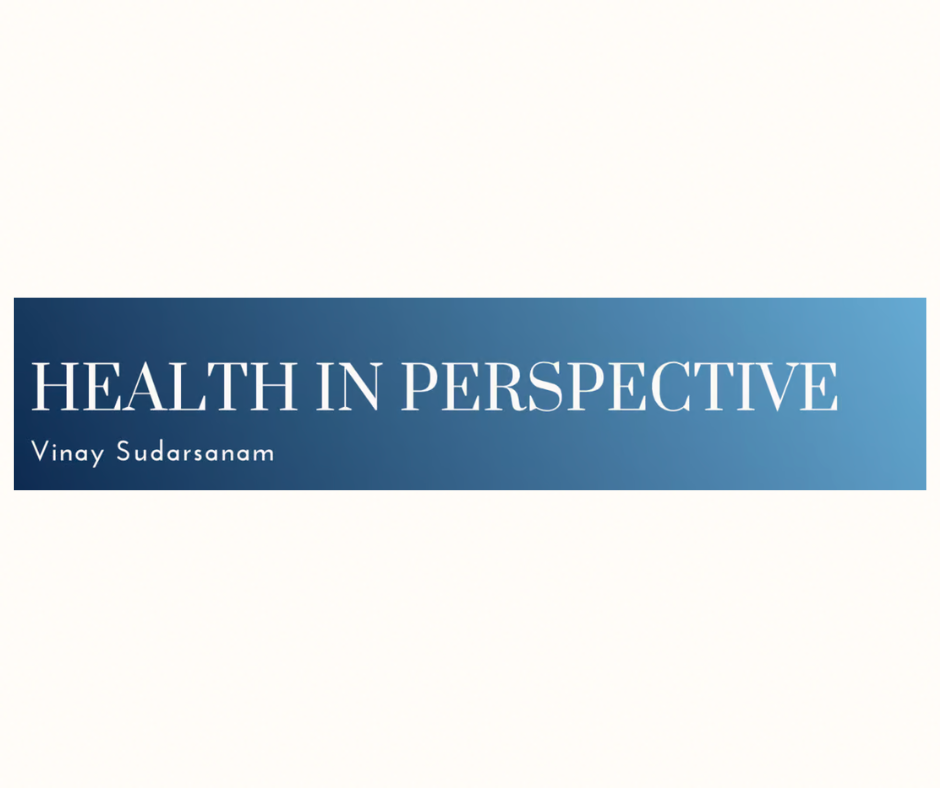
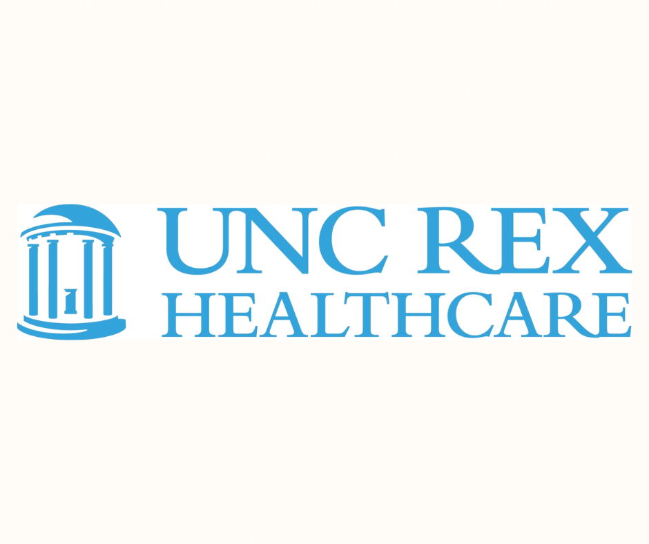

Thrive Together, NC.
Co-President and Co-Founder of Thrive Together.
The mission of Thrive Together is to reduce adverse childhood experiences amongst children in North Carolina by reducing social and health inequities. We hope to bridge the gap between communities by providing resources and resolving pressing needs. Over the past few months, we have been building the Community Support Initiative to. provide Thrive Together members with a way to work directly with underrepresented communities in North Carolina, solving pressing issues. View Our Website.
UNC Kidney Center, PRC Lab
Student Researcher at the PRC Lab.
At the PRC (Prabir Roy-Chaudhury) Lab, I explore vascular access and novel strategies to improve dialysis treatment. Using histomorphometry and 3D Imaging Techniques, I work to identify occlusion in arteriovenous fistulae samples and calculate maximal and average stenosis. By collaborating with other labs at the UNC Kidney Center, our goal is to improve the quality of life of renal failure patients. Learn More About Our Work.

Health in Perspective
Health Policy Journalist.
I post succinct, argumentative pieces about various health policy topics on my Beehiiv portfolio titled "Health in Perspective". In my journal, I explore how science research is manifested in health policy decisions and how those decisions affect different populations of people.
Some of my previous topics include: Medicare for All, Education Policy in NC, the Flint Michigan Water Crisis, Dialysis Treatment in India, and Physician Shortage. Subscribe and Read More.

UNC REX Healthcare
PACU Volunteer.
I volunteer at the Post-Anesthesia Care Unit at UNC Rex in Raleigh, NC. At the hospital, I transport patients, stock tables, and set up patient beds. By collaborating onside a superb team of nurses, CNAs, and techs, I hope to support patients as they leave the hospital.
Learn More about REX Healthcare.